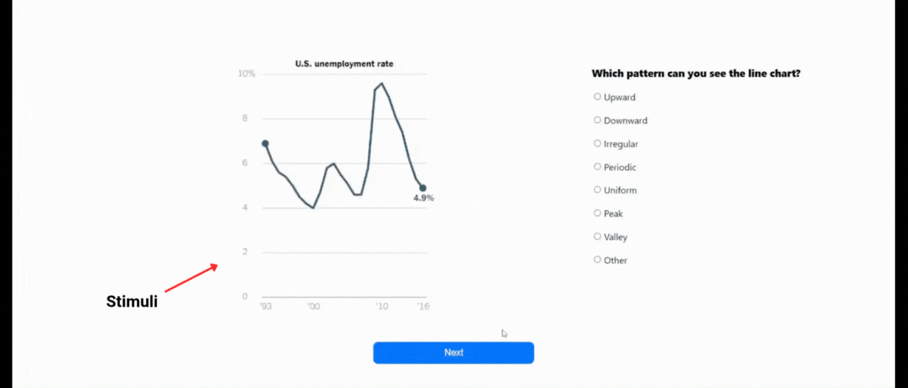

For each of the 50 line charts, you will be tasked: "What pattern can you see in the line chart?"
There are 7 choices, each representing a line chart pattern. Carefully examine the chart and select the option that best represents the pattern you observe. If the chart’s pattern does not clearly fit any of the provided choices, please select “Other” and briefly describe the pattern in your own words. You will have 15 seconds for each task. There is a static screen for half a second between each task to clear the previous visual stimuli. Please answer as accurately and honestly as possible.

When you're ready to begin, click "Start Study" below. The study should take approximately 20 minutes to complete.